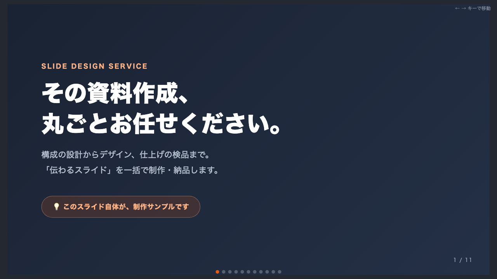

01 / SAMPLE
構成から考える
営業資料制作
- 目的
- 読む相手が、内容を理解して次の行動を選べる資料にする。
- 制作
- 構成案の確認後、1スライド1メッセージを軸にデザイン・検品まで進める。
- 納品
- PDFを基本に、案件の条件に合わせて形式をご相談します。
CW PORTFOLIO / 2026
CROWDWORKS / REMOTE
メモや箇条書きから、構成の整理・制作・全体チェックまで。
Claude Codeを活用して、制作と修正を速く進めます。
対応範囲と納期は、ご依頼内容を確認してからご案内します。
FEATURED WORK
これはクライアント実績ではなく、自分で制作した品質サンプルです。誇張せず、実物で判断してもらえます。

01 / SAMPLE
SCOPE
まずは納品物を作るご依頼に絞って受けます。継続コンサル・SNS運用代行は現在受けていません。
営業資料、サービス紹介、セミナー・研修資料、既存資料のリデザイン。
1ページの紹介サイト、LP、ポートフォリオ、既存ページの軽い改修。
転記・下書き作成・定期レポートなど、繰り返し作業を減らす小さな仕組み。
FLOW
作りたいもの、用途、希望納期、素材の有無を送ってください。まとまっていなくても大丈夫です。
対応できる範囲、納期、納品形式を確認します。合意前に制作は始めません。
必要に応じて構成案を先に確認し、合意後に制作します。
リンク、表示、表記ゆれなどを確認して納品します。修正範囲は案件ごとに事前に決めます。
CONTACT
メールなら、内容を残しながらやり取りできます。件名に「サイトを見た」と入れてもらえれば、用途と希望納期を確認して返信します。
FAQ
クライアント案件の実績はこれからです。だからこそ、営業スライドの実物と対応範囲を公開し、できること・できないことを事前に合わせます。
ページ数、素材の有無、修正範囲、納品形式で変わります。相談内容を確認してから、対応可否・見積り・納期を案内します。
箇条書き、既存資料、参考URL、目的だけでも始められます。足りない情報は、最初に確認します。